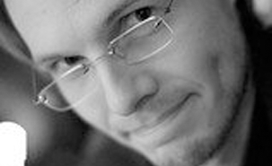

Team Leaders
-

Douglas Densmore
Doug was the original creator of Clotho when he was a UC Chancellor’s post doctoral fellow at UC Berkeley. He also served as the research advisor for the 2008, 2009, and 2011 Clotho iGEM teams. He is is a Kern Faculty Fellow, a Hariri Institute for Computing and Computational Science and Engineering Junior Faculty Fellow, and Associate Professor in the Department of Electrical and Computer Engineering at Boston University. His research focuses on the development of tools for the specification, design, and assembly of synthetic biological systems, drawing upon his experience with embedded system level design and electronic design automation (EDA). He received his B.S.E in Computer Engineering from the University of Michigan and his M.S. and PhD in Electrical Engineering from UC Berkeley. He is the director of the Cross-disciplinary Integration of Design Automation Research (CIDAR) group at Boston University, which develop computational and experimental tools for synthetic biology. His research interests include Synthetic Biology, Bio-Electronic Systems, Cyber Physical Systems, Digital Logic Design, and System Level Design.
-
J. Christopher Anderson
Chris leads the Anderson Lab to resolve bottleneck steps in the design and implementation of genetic engineering projects. Currently the lab is focused on developing the Clotho and Act Synthesizer tools, multiplex characterize technologies, and formal solutions to biosafety problems.
Current Team
-
Prashant Vaidyanathan
Prashant received his M.S. degree in Computer Engineering from Boston University and B.E. (Hons.) degree in Electrical and Electronics Engineering from Birla Institute of Technology and Science. He is currently pursuing a Ph.D. in Computer Engineering at Boston University, focusing on Functional Specification in Genetic Circuits. As a part of the Cross-disciplinary Integration of Design Automation Research (CIDAR) group, he developed various computational tools for Synthetic Biology including a Logic synthesis tool for Genetic Circuits. His research interests include Computer Architecture, Computer Arithmetic, Reconfigurable Computing, Embedded Systems, Logic Synthesis and Synthetic Biology.
-
Nicholas Roehner
Nicholas received the B.S. and Ph.D. degrees in bioengineering from the University of Washington in 2010 and the University of Utah in 2014, respectively, and is currently working as a postdoctoral researcher at Boston University. He has developed methodologies and algorithms for technology mapping of genetic circuits, which are implemented as part of the genetic design automation software tool iBioSim, and he has contributed as an editor to the development of the Synthetic Biology Open Language (SBOL), a community standard for the digital reuse and sharing of biological designs. He is currently developing Double Dutch, a web application for designing libraries of variant metabolic pathways that are tailored for use in a design of experiments framework. His research interests include biodesign automation and standards and their reconciliation with laboratory practice.
-
Bill Cao
Bill Cao graduated from UC Berkeley with a B.S. in Electrical Engineering & Computer Sciences and a B.S. in Bioengineering. He joined the Clotho team with a goal to facilitate innovation in synthetic biology utilizing the power of computation. His interests include computational medicine, entrepreneurship, and anything fun that gets him away from a computer screen.
Past Clotho 3.0 Collaborators
-
Maxwell Bates
-
Stephanie Paige
-
Mina Li
Clotho Alumini
-
Adam Liu
-
Anne Vandevender
-
Ben Bubenheim
-
Bing Xia
-
Carlos Olguin
-
Cesar
-
Joanna Chen
-
Josh Kittleson
-
Lesia Bilitchenko
-

Marc
-
Matthew Johnson
-
Michal Galdzicki
-
Nade Sritanyaratana
-
Nina Revko
-
Richard Mar
-
Swapnil Bhatia
-
Thien Nguyen
-
Timothy Ham